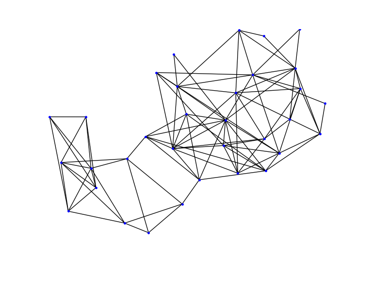

Welcome to pygks’s documentation!¶
Installation Guide¶
This package depends on Python2.7, numpy, sklearn and python-graph. After the installation of Python 2.7, the other packages can be installed automatically with setuptools as follows.
pip install numpy
pip install sklearn
pip install matplotlib
Python-graph can be downloaded from the link (also provided in the prerequisites folder of pygks):
http://code.google.com/p/python-graph/
After downloading, switch to the ‘core’ directory and run:
python setup.py install
Finally, after installing all the required packages, we can switch to the package directory and install the pygks package.
cd Software directory/pygks_package
python setup.py install
Overview¶
This package implements the Growing Neural Gas (GNG), single layered Self-Organizing Incremental Neural Network (SOINN). Kernel Density Estimation (KDE), and Semi-Supervised Gaussian kernel smoothed (SSL-GKS) regression. Moreover, there are some usefull tools for high dimensional data visualization and density visualization.
If there’s any questions, please contact me at: lordxzy@qq.com.
Examples¶
The following is an example of regression and drawing a 2d density contour.
from pygks.utils import csv_reader
from pygks.reg_gng import GNGregressor
from numpy import array
r = csv_reader('reg_intro.csv')
X,y = r.separate_label()
the_reg = GNGregressor(smooth = -0.5, age_max = 200, nn_lambda = 60)
the_reg.fit(X,y)
test_x = []
draw_x = []
for i in range(100):
test_x.append(array([i/100.0]))
draw_x.append(i/100.0)
test_y = the_reg.predict(test_x)
r2 = csv_reader('reg_intro.csv')
testX, testY = r2.separate_label()
from sklearn.metrics import mean_squared_error
print mean_squared_error(testY,the_reg.predict(testX))
import matplotlib.pyplot as plt
fig = plt.figure()
r_draw = csv_reader('reg_intro.csv')
X_raw = r_draw.get_all()
X_draw = []
i = 0
for each in X_raw:
if i % 3 == 0:
X_draw.append(X_raw[i])
i += 1
print X_raw[0]
ax = fig.add_subplot(111)
for i in range(len(X_draw)):
ax.plot(X_draw[i][0], X_draw[i][1], '.', color = '0.8')
ax.plot(draw_x,test_y,'k-')
plt.show()
the_reg.draw_density()
The output is:
training with bandwidth calculation, please wait...
end round!
time cost 0.599024057388
0.0097513650717
[ 0. -0.12730268]
This is another example of drawing SOINN training result.
from pygks.utils import csv_reader
from pygks.ui_isoinn import data_block
from numpy import array
r = csv_reader('wine_train.csv')
data = r.get_all()
nn_model = data_block(data, age_max = 200, nn_lambda = 70)
nn_model.draw_2d()
The output is:
Another example of semi-supervised SOINN regression:
from pygks.reg_inn import ISOINNregressor
from numpy import array
from pygks.utils import csv_reader
from sklearn.metrics import mean_squared_error
from numpy import isnan,isinf
r1 = csv_reader('wine_train.csv')
r2 = csv_reader('wine_test.csv')
trainX, trainy = r1.separate_label()
testX, testy = r2.separate_label()
nnReg = ISOINNregressor(K = 30, age_max = 300, nn_lambda = 350, alpha = 10, smooth = None, del_noise = True)
nnReg.fit(trainX, trainy)
print len(testX[0]),'dimension'
print len(nnReg.nodes),'nodes'
predicty = nnReg.predict(testX)
delets = []
i = 0
for each in predicty:
if isnan(each) or isinf(each):
print(i,each,'error after density estimation')
delets.append(i)
i += 1
for i in range(len(delets)):
testy.pop(delets[i]-i)
predicty.pop(delets[i]-i)
print len(delets),'failed points'
print mean_squared_error(testy,predicty)
The output is:
training with bandwidth calculation, please wait...
end training SOINN!
time cost 1.40131592751
11 dimension
107 nodes
end training SOINN!
0 failed points
0.0125627244183
Package Contents¶
-
class
pygks.utils.csv_reader(filename, has_header=False, deli=', ')¶ -
This class is for easy csv file reading. has_header is True or False. While set to True, this utility will jump the first line of csv file, thinking it as the header.
-
Parameters: filename (string), deli(charactor)
-
filename is the file you want to read, which contains the data for machine learning. deli is the delimiter of the csv file.
-
get_all()¶ -
Return the complete data in the form of list of numpy arrays.
-
separate_label()¶ -
Similar to get_all() method, but the last element in each line is separated as labels.
-
-
class
pygks.gks.GKS(setN, populations, standard_variances, Y_number, smooth=None, K=5)¶ -
Gaussian kernel smoother to transform any clustering method into regression. setN is the list containing numpy arrays which are the weights of clustering centors. populations is a list of integers of cluster populations. standard_variances is the list of real numbers meaning the standard variances of the dataset along each dimension. smooth is None or real number. While set to None, an SSL procedure will be employed. For details, see the responses() method.
-
K= 5¶ -
Number of clustering centers for smooth parameter calculation.
-
Y= 1¶ -
Number of response variables.
-
percentages= None¶ -
Distribution of the cluster populations.
-
responses(points, prototypes=None)¶ -
points is a list or array of numpy arrays, and this method returns the regression results of the dataset points. If the smooth parameter is initialized as None, the prototypes parameter will be required as a list or array of clustering centers in the form of numpy arrays, which is genertated by the user chosen clustering method on the same dataset to the one specified by points variable.
-
setN= None¶ -
Weights of the clustering centers, after instance initialization, it will be a list data structure.
-
smooth= None¶ -
Smooth parameter.
-
xdim= None¶ -
Dimension of the explanatory variables.
-
ydim= None¶ -
Dimension of the response variables.
-
-
class
pygks.kde.density(setN, countN, standard_deviation)¶ -
This is a kernel density estimation framework, but not the complete algorithm. The user will have to run a clustering method first to get the clustering centers and cluster populations. setN is the list of numpy arrays which are the weights of clustering centers. countN is the list containing cluster populations. standard_deviation is the list of standard deviations of the dataset along each dimension.
-
estimate(x_in)¶ -
Estimate the density of the vector x_in.
-
kernel(x)¶ -
Defines a Gaussian kernel as f(x), can define different kernels.
-
GNG regressor
-
class
pygks.reg_gng.GNGregressor(smooth=None, response_dimension=1, K=10, age_max=100, nn_lambda=50, ann=0.5, bnn=0.0005, eb=0.05, en=0.0006)¶ -
Regression interface based on SSL-GKS and GNG. smooth can be set to None or real number, normally falls in [-1,0]. If set to None, SSL will be employed to estimate its value. response_dimension is integer, means the number of response variables. K is integer which is the number of neurons for kernel smoothing, larger K means little details but more smoothed predictions. The rest of the parameters are GNG training parameters.
-
K= 10¶ -
Number of neurons selected for kernel smoothing.
-
Pis= []¶ -
Distribution of the neuron populations.
-
bands= []¶ -
Bandwidth for visualization.
-
draw_density(resolution=0.05)¶ -
Draws the density contour of any regressor instance. It can only be called after calling the fit method, and only work in 2d case. resolution is a postitive real number definining the detail level of drawing. A smaller resolution number will generate more detailed drawings.
-
fit(X, y)¶ -
X is array or list, each element is numpy array. Y is array or list containing the response varaible values.
-
gr= []¶ -
Topology structure of neurons.
-
nodes= []¶ -
Weights of the neurons.
-
predict(data)¶ -
This method returns the predictions the variable data. data should be within the same data space to X in the fit method. When smooth parameter is set to None, an SSL procedure will be employed to estimate it.
-
smooth= -0.4¶ -
Smooth parameter for kernel smoothing, if set to None, SSL smooth parameter selection will be employed.
-
The SOINN regressor.
-
class
pygks.reg_inn.ISOINNregressor(smooth=None, response_dimension=1, K=10, age_max=200, nn_lambda=60, alpha=10, del_noise=True)¶ -
Regression interface based on SSL-GKS and SOINN. smooth can be set to None or real number, normally falls in [-1,0]. If set to None, SSL will be employed to estimate its value. response_dimension is integer, means the number of response variables. K is integer which is the number of neurons for kernel smoothing, larger K means little details but more smoothed predictions. The rest of the parameters are GNG training parameters.
-
K= 10¶ -
Number of neurons selected for kernel smoothing.
-
Pis= []¶ -
Distribution of the neuron populations.
-
bands= []¶ -
Bandwidth for visualization.
-
draw_density(resolution=0.05)¶ -
Draws the density contour of any regressor instance. It can only be called after calling the fit method, and only work in 2d case. resolution is a postitive real number definining the detail level of drawing. A smaller resolution number will generate more detailed drawings.
-
fit(X, y)¶ -
X is array or list, each element is numpy array. Y is array or list containing the response varaible values.
-
gr= 0¶ -
Topology structure of neurons.
-
nodes= []¶ -
Weights of the neurons.
-
predict(data)¶ -
This method returns the predictions the variable data. data should be within the same data space to X in the fit method. When smooth parameter is set to None, an SSL procedure will be employed to estimate it.
-
smooth= -0.4¶ -
Smooth parameter for kernel smoothing, if set to None, SSL smooth parameter selection will be employed.
-
-
class
pygks.ui_gng.data_block(data, no_label=True, age_max=300, nn_lambda=88, ann=0.5, bnn=0.0005, eb=0.05, en=0.0006)¶ -
This is the programming and user interface for GNG. data is the training dataset, should be array or list, with each element numpy arrays with the same dimension. no_label is True or False. While set to False, the last element of each array in data will be treated as labels. The rest of the variables are training settings for GNG.
-
counts()¶ -
Output the winning times of each neuron and the accumulated errors of the GNG network.
-
draw_2d(scale=1, axis_=False)¶ -
Draws the topology structure and neurons. scale is real number, it can be set arbitrarily to adjust the size of drawed neuron clusters. axis is True or False, and means weither to enable axis in the final drawings. In this method, MDS is used for drawing high dimensional Euclidean graphs. If you do not use this method, sklearn is not a prerequisite for running the pygks software.
-
gr= {}¶ -
Topology structures, implemeted with python-graph.
-
graph_features()¶ -
Generating topological features including vertice orders for future use.
-
nodes= []¶ -
Weight of neurons.
-
outlier_nn(positive=1, negative=-1)¶ -
This method finds the largest neuron cluster. If a neuron belongs to this cluster, a label specified by positive will be added to this neuron, else this neuron will be labeled by negative variable. The labeled results will be outputed in a list as labels_final.
-
output_graph()¶ -
Return the topology structure as a python-graph.
-
output_nodes()¶ -
Return the list of neuron weights.
-
-
class
pygks.ui_isoinn.data_block(data, no_label=True, age_max=200, nn_lambda=70, alpha=2.0, del_noise=True, un_label=0)¶ -
This is the programming and user interface for SOINN. data is the training dataset, should be array or list, with each element numpy arrays with the same dimension. no_label is True or False. While set to False, the last element of each array in data will be treated as labels. The rest of the variables are training settings for SOINN.
-
counts()¶ -
Output the winning times of each neuron and the accumulated errors of the SOINN network.
-
draw_2d(scale=1, axis_=False)¶ -
Draws the topology structure and neurons. scale is real number, it can be set arbitrarily to adjust the size of drawed neuron clusters. axis is True or False, and means weither to enable axis in the final drawings. In this method, MDS is used for drawing high dimensional Euclidean graphs. If you do not use this method, sklearn is not a prerequisite for running the pygks software.
-
gr= {}¶ -
Topology structures.
-
graph_features()¶ -
Generating topological features including vertice orders for future use.
-
nodes= []¶ -
Weight of neurons.
-
outlier_nn(positive=1, negative=-1)¶ -
This method finds the largest neuron cluster. If a neuron belongs to this cluster, a label specified by positive will be added to this neuron, else this neuron will be labeled by negative variable. The labeled results will be outputed in a list as labels_final.
-
output_graph()¶ -
Return the topology structure as a python-graph.
-
output_nodes()¶ -
Return the list of neuron weights.
-
Growing Neural Gas main file, for developers only.
-
pygks.gng2.gr= <pygraph.classes.graph.graph [] []>¶ -
topology structure implemented by python-graph
-
pygks.gng2.remove_node(index)¶ -
Remove a neuron specified by ‘index’.
-
pygks.gng2.setN= []¶ -
set of neuron weights
-
pygks.gng2.set_parameter(age, lambda_set, ann_set, bnn_set, eb_, en_)¶ -
Initilization of GNG, calling this function after training will reset the neural network for further training. age, lambda_set, ann_set, bnn_set, eb_, en_ are the GNG parameters meaning max age, learning step, winner adaptation size, neighbor of winner adaptation size, and error reduction sizes.
-
pygks.gng2.step(point, pLabel, tx)¶ -
The GNG training procedures in each step. ‘point’ is the input vector. ‘pLabel’ is the label of the input vector and set to 0 if unlabeled. ‘tx’ is the mark for end training (when set to -1).
The single layer SOINN algorithm procedures, for developers only.
-
pygks.isoinn2.gr= <pygraph.classes.graph.graph [] []>¶ -
topology structure implemented by python-graph
-
pygks.isoinn2.remove_node(index)¶ -
Remove a neuron specified by ‘index’.
-
pygks.isoinn2.setN= []¶ -
neuron weights
-
pygks.isoinn2.set_parameter(age, lambda_set, alpha_set, min_cluster, if_delete)¶ -
Initilization of SOINN, calling this function after training will reset the neural network for further training. age, lambda_set, alpha_set,min_cluster,if_delete are the SOINN parameters meaning max age, learning step, neuron clustering coefficient, minimum desired clusters and a choice whether to delete the neurons without neighbors in the final round of training.
-
pygks.isoinn2.step(point, pLabel, tx)¶ -
The SOINN training procedures in each step. ‘point’ is the input vector. ‘pLabel’ is the label of the input vector and set to 0 if unlabeled. ‘tx’ is the mark for end training (when set to -1).